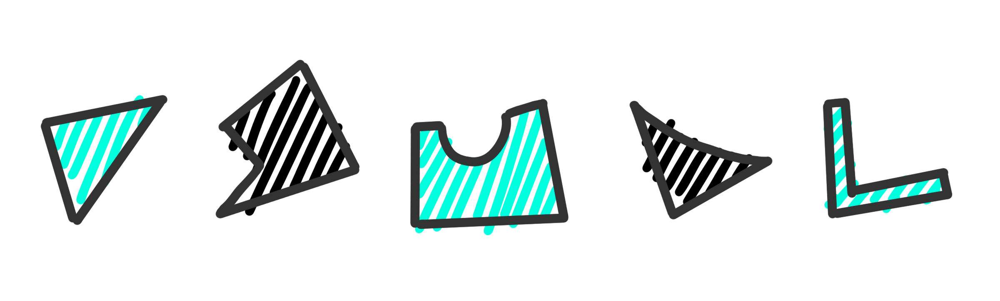
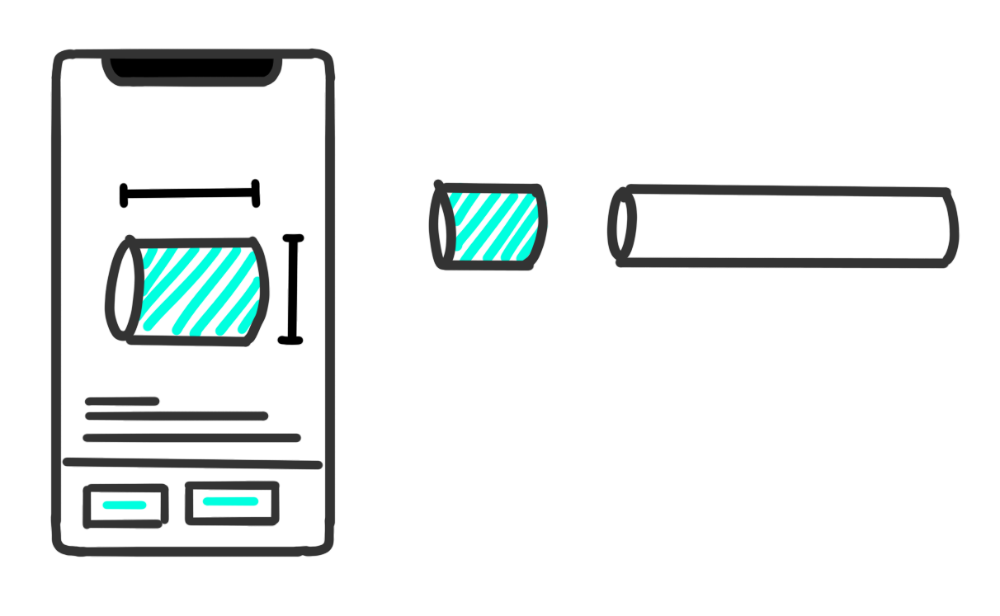
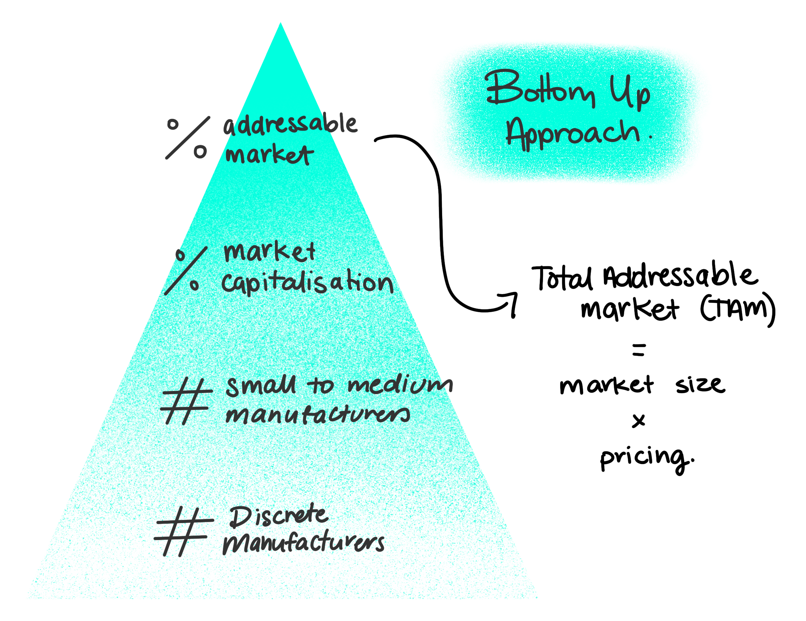
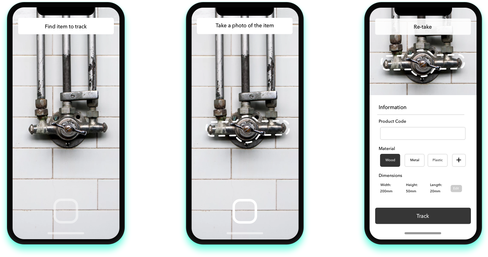

A unviersity course that challenged us to innovate, validate and propose a business model for investment. The following shows the process and result my team produced.
MoreA pain point in discrete manufacturers, is handling the inventory of material offcuts. This was discovered by a team member whom interned at a small manufacturing business.
He noticed that the management of material offcuts was next to none. The offcuts piled up in a corner at the facility; the extra time to manage the offcuts discouraged usage and resulted in waste.
Our solution was to create an inventory management solution for discrete manufacturing enterprises. We invisioned an application that could track, modify, remove, and reserve materials. The product would be able to keep track of where workers have placed materials in storage areas, and instruct the team on where to store catalogued materials.
To fully recognize the validity of the invisioned solution we need to research the market size and competition.
To find a solution to a problem is one thing, but if that solution does not have a market nor provide a useful purpose there is no point.
We're looking at discrete manufacturing enterprises, since our bigger companies would already have their own systems, our target market was the small to medium enterprises. The addresable market size was the calculated through valid statistics and reasonable estimations of reach. New Zealand was found to have aroud 19,000 small to medium discrete manufacturing enterprises.
Simply put, we used a bottom up approach to figure out specifically how many enterprises would buy our product and calculate a Total Addressable Market. This total addressable market value gives a good prediction whether any investment will be rewarded.
Secondary market research was used in this case, but more exstensive primary market research create more solid data.
Understanding the competition is necessary. Why would someone prefer our product over someone elses?
We weren't blind to the competition. Big companies had inventory systems in place for companies, but they are bulky, hard to use and very manual.
Our differentiation relied on our ability harness AR technology and thus create an outstanding user experience.
We brainstormed out minimal viable product. What were the key features that our market needed? Cross platform, Cloud based, AR Integration
I created designs on how the app might work on mobile. These were for the investment pitch and further understanding of user experience.
Through this course I learnt a whole lot about entrepreneurship. Validation of idea, building realistic business models and pitching informed value propositions to potential investors. This all culminated in a group pitch to the lecturer of the course to justify an investment in the product and the team. Milestones pitched included, MVP build, local/national business roll out, to eventual world domination and numbers to back up the scaling. We then went onto enter our idea in a competition under the name STACD, which earnt us a $1,000 in the Innovation Challenge through the University.
I learnt that building a product is more than having a great idea. It's about building a business model around a useful user-centric product that has a tangible market.